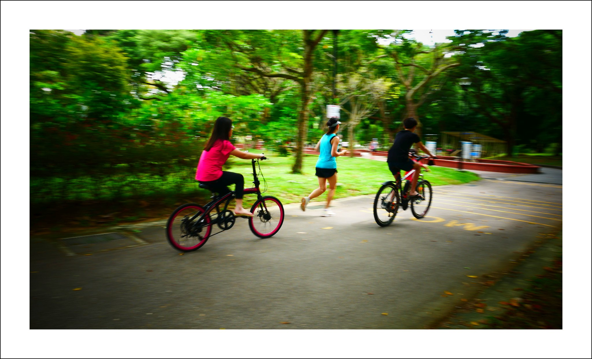

Exploring the Outdoors
Spending time in nature helps us relax, slow down, and appreciate the environment. Local parks are more than green spaces; they’re places to recharge and connect with others.
Across the world, communities invest in natural spaces to preserve wildlife and give people opportunities for recreation. Walking trails, picnic areas, and riverside paths all bring people closer to the outdoors.
On this site, we’ll look more closely at two features of nature you’ll find in nearly every park: trees and rivers. Use the menu to explore more.
Image source: Flickr Creative Commons